CPU
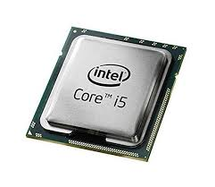A CPU é o “cérebro” do computador. Ela executa as instruções dos programas, realiza cálculos e controla as operações dos demais componentes. É composta por núcleos que processam dados em alta velocidade, e sua eficiência impacta diretamente no desempenho geral do sistema.
Armazenamento
O armazenamento é onde os dados e programas são guardados para uso imediato ou futuro. Pode ser permanente, como discos rígidos (HDD) e unidades de estado sólido (SSD), ou temporário, como a memória cache. O tipo e a capacidade do armazenamento influenciam a velocidade de acesso aos dados e a quantidade de informações que o computador pode guardar.
Memória
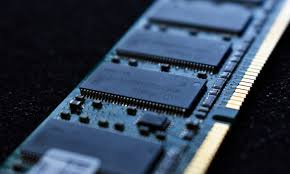A memória temporária do computador armazena dados que estão sendo processados ativamente, como a memória RAM. Ela é essencial para que os programas funcionem rapidamente e sem travamentos, influenciando diretamente no desempenho do sistema.
Fonte de alimentação
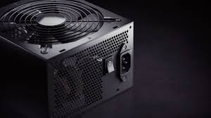A fonte de alimentação converte a energia elétrica da tomada em energia utilizável pelo computador, distribuindo voltagens adequadas para cada componente interno. Ela garante o funcionamento estável e seguro do sistema, protegendo contra variações de energia.
Teclado
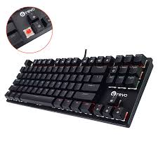Dispositivo de entrada usado para digitar texto, comandos e controlar o computador. Possui teclas alfanuméricas, funcionais e especiais que permitem a interação com o sistema.
Monitor de vídeo
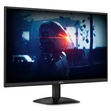Dispositivo de saída que exibe imagens, vídeos e informações visuais geradas pelo computador. Pode ser LCD, LED, OLED, entre outros tipos, com diferentes tamanhos e resoluções.
Mouse
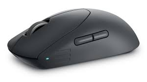Dispositivo de entrada que permite ao usuário controlar o cursor na tela, facilitando a navegação e a execução de comandos por meio de movimentos e cliques.
Impressora
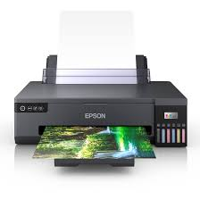Equipamento que transforma documentos digitais em cópias físicas, imprimindo texto e imagens em papel. Pode ser jato de tinta, laser, térmica, entre outros tipos.
Plotter
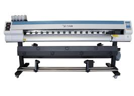Dispositivo de saída utilizado para impressão de desenhos técnicos, plantas e gráficos em grande escala, muito usado em engenharia, arquitetura e design.
Scanner

Dispositivo que digitaliza documentos e imagens, convertendo-os em arquivos digitais para armazenamento, edição ou compartilhamento.
Gabinete
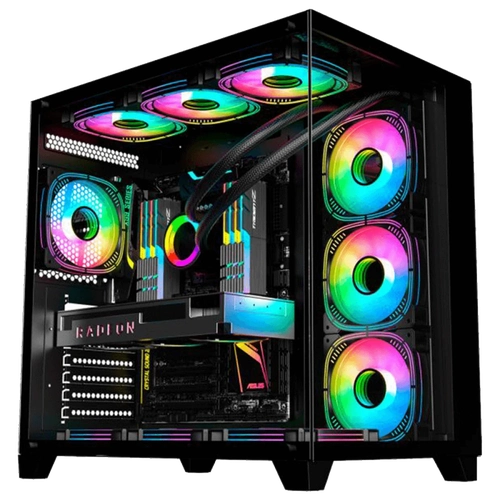Carcaça que abriga os componentes internos do computador, protegendo-os contra poeira, impactos e facilitando a organização e ventilação dos componentes.
Web Cam
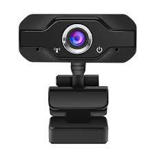Dispositivo que captura imagens e vídeos em tempo real, muito utilizado para videochamadas, streaming e gravações.
Caixas de som
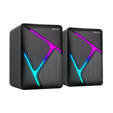Dispositivos de saída que reproduzem áudio, permitindo ao usuário ouvir sons, músicas, vídeos e outros conteúdos sonoros gerados pelo computador.
Microfone
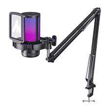Dispositivo de entrada que capta sons do ambiente, permitindo gravações de voz, comunicação por áudio e reconhecimento de voz.
Headset
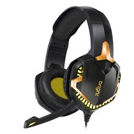Conjunto que combina fones de ouvido com microfone integrado, usado para comunicação, jogos, gravações e audição de áudio com privacidade.
Interfaces sem fio
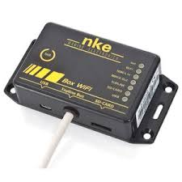Conexões que permitem a comunicação entre dispositivos sem cabos físicos. Exemplos incluem Wi-Fi e Bluetooth, usados para acessar redes, transferir dados e conectar periféricos.
Áudio
Interface que permite a entrada e saída de sinais sonoros. Entradas de áudio recebem sons através de microfones, enquanto as saídas enviam áudio para caixas de som ou fones de ouvido.
Rede (Ethernet)

Interface física usada para conectar computadores a redes locais (LAN) via cabo, proporcionando conexão estável e rápida para troca de dados.
VGA
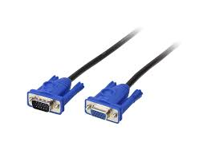Interface de vídeo analógica que conecta computadores a monitores ou projetores, com resolução limitada comparada às interfaces digitais.
HDMI
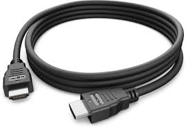Interface digital que transmite áudio e vídeo em alta definição entre dispositivos, suportando alta qualidade em um único cabo.
USB
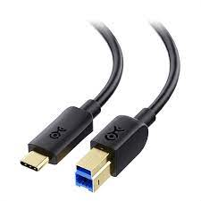Interface amplamente usada para conectar periféricos ao computador, oferecendo alta velocidade de transferência e fornecimento de energia.